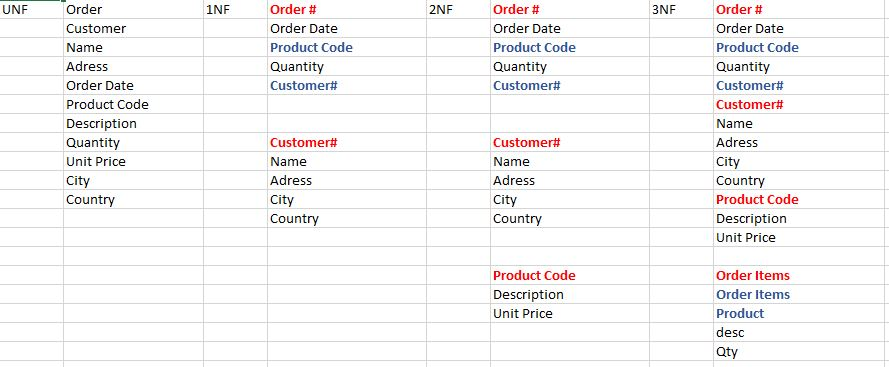
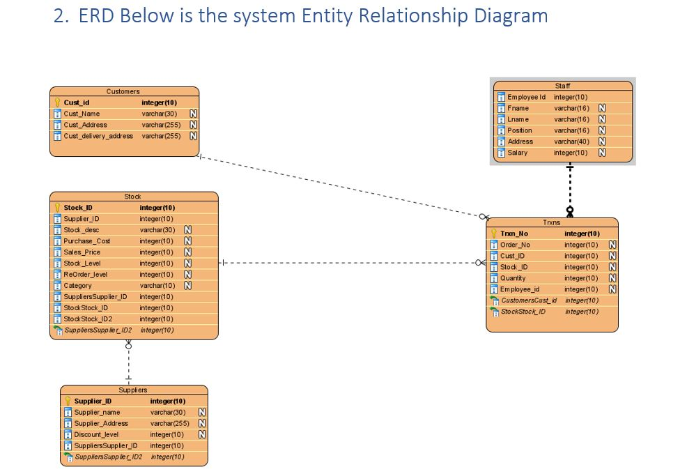

Normalisation and entity Relationship Diagrams two widely used database design tools...

Data Normaisation Exercise
Our experience in Database architecture is vast. Once we have our data elements defined we will work to
create a normalisated set of data tables which will create the intial database design. These tables can be added to as the
functionality of the final system develops. However the initial Normalised design allows for fast and efficient data storage and retrieval.
If you have a sample data set we would be happy to work with you to create a first normal form.

Entity Relationship Diagram ERD
Included in our Database Design tool-box is the Entity Relationship Diagram. Once we have our data elements defined we will work to
create a normalisated set of data tables which will create the intial database design. These entity Relationships provide the backbone of the
architecture going formward. We have a wide range of tool at our dispposal for developing ERD Diagrams. We would be pleased to discuss
which tool best suited your particular needs and work to create a ERD for your application.